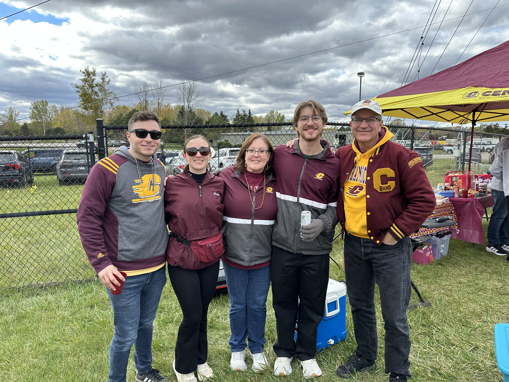
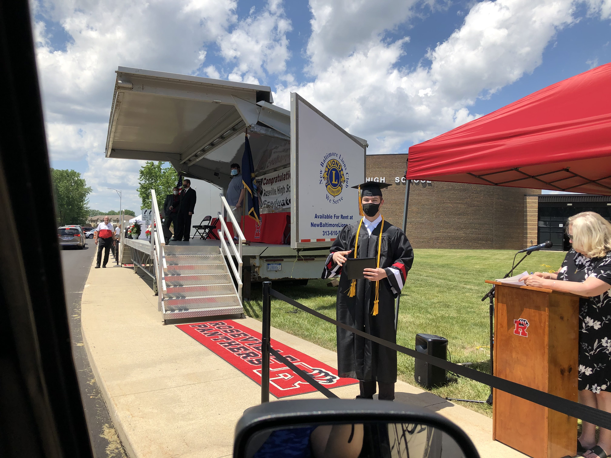

I am the youngest member of a proud CMU family, following in the footsteps of my sister, brother-in-law, both my parents, and one aunt and uncle, who are all CMU alums.
I started at MCC through a program called Early College of Macomb, where certain students could take replacement courses at the community college that awarded credits toward their high school requirements as well as college credits.
At RHS (different building from the middle school), I played soccer, marched in the drumline of the marching band, bowled on the JV team, was part of the National Honors Society, and took multiple AP classes. Then, I finished out my senior year during the start of the COVID-19 Pandemic without a prom and with a drive-by graduation for which I hopped out of my parents car for 30 seconds in my cap and gown to get a picture.
Long before I was here, the middle school had been Roseville High School, where my dad went to school.
This elementary school was freshly built in our community following the planned demolition of the old schools, making me one of the first students to ever attend it.
I started school at Lincoln just before it was torn down. It was the very same elementary school that my grandpa, born in 1917, attended.

